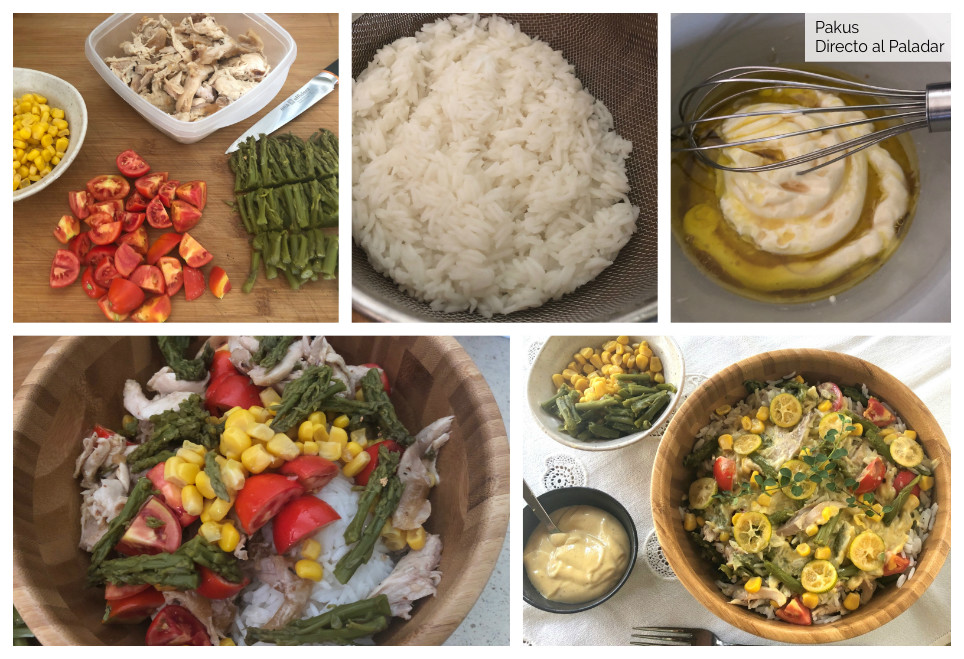

| Ingredientes | Cantidad |
|---|---|
| Arroz basmati | 200 g |
| Maíz en grano | 50 g |
| Espárragos trigueros cocidos | 100 g |
| Tomate | 100 g |
| Aceite de olivia virgen extra, dos cucharadas soperas | |
| Vinagre una cucharada | |
| Mayonesa con dos cucharadas | |
| Comino molido una pizca | |
| sal al gusto | |
| Pechuga de pollo asado | 200 g |
| kumquat cortado en rodajitas | 2 |
Comenzamos poniendo el arroz basmati en remojo unos minutos para que se ablande y suelte algo de almidón. Después lo cocemos siguiendo las instrucciones del fabricante, -serán necesarios unos doce minutos aproximadamente- y cuando lo tenemos listo, lo escurrimos bien en un colador. Para hacer el aliño, mezclamos en un cuenco el aceite, el vinagre, la mayonesa y añadimos una pizca de comino molido. Mezclamos bien hasta emulsionar y reservamos. Picamos los espárragos verdes en trocitos y escurrimos el maíz cocido de la lata. Cortamos los tomates en pequeñas porciones y preparamos el pollo asado, cortando la pechuga en porciones pequeñas. Si tenéis algo de salsa del pollo también es buena para mezclar en nuestro aliño, aligerándolo un poco y aportando más sabor. Terminamos mezclando los ingredientes para que queden bien repartidos y aliñamos justo antes de comernos la ensalada, para que los ingredientes no se queden lacios sino que mantengan su tersura y textura. Decoramos con el kumquat cortado en rodajas muy finas y un poco de tomillo fresco. En caso de preparar esta ensalada para llevar al trabajo, el aliño lo llevaremos en un frasco de cristal cerrado que agitaremos en el último momento antes de servir sobre la ensalada.
